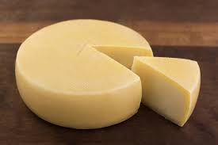

Pão de Queijo
Pastel
Macarrão
Receita de Pão de Queijo

Pão de queijo é uma receita típica brasileira, do estado de Minas Gerais. A sua origem é incerta, especula-se que a receita exista desde o século XVIII, mas tornou-se efetivamente popular no Brasil a partir da década de 1950.
Ingredientes
- 2 copos americanos de leite
- 1 copo americano de água
- 1/3 de copo americano de óleo
- 1 colher de sopa de sal
- 500 g de polvilho doce
- Queijo ralado a gosto
- 3 ovos inteiros
Modo de Preparo
- Ferva o leite com a água e o óleo.
- Em uma vasilha misture o polvilho e o sal.
- Jogue o liquido fervido e misture com uma colher grande.
- Espere esfriar e despeje o queijo ralado e os ovos.
- Misture a massa com a mão amassando bem até virar uma cola caseira dura.
- Faça bolinhas do tamanho que preferir.
- Asse em forno bem quente até dourar.
- Sirva quentinho.